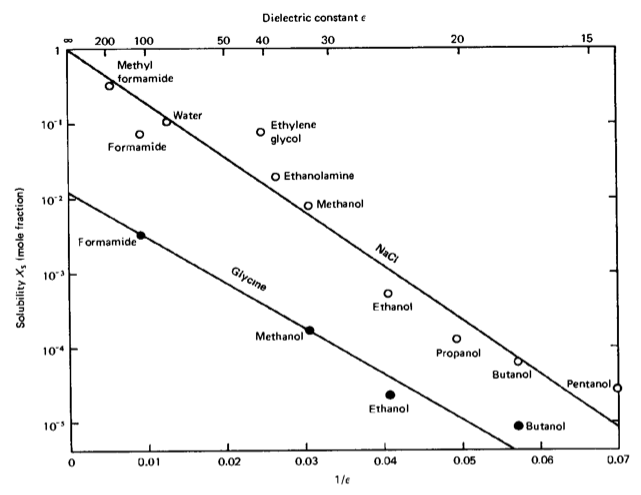

This page was generated from notebooks/L7/2_Forces and Interactions.ipynb.

Forces and Interactions in Soft Matter#
While we have discussed in the previous sections the thermodynamics of systems and the kinetics of phase transitions, we have made as few as possible assumptions on the interactions between the liquid components of a mixture to highlight the importance of entropic and other effects. Now, we would like to have a close look at the possible types of interactions and their order of magnitude in soft matter systems. We may classify the interactions in the following way: - covalent interaction (chemical binding), - electrostatic (Coulomb), - dipolar (vdW), - hydrogen bonding, - dispersion (vdW), - fluctuation, depletion (entropic).
These interactions deliver the forces that hold soft matter together, even though the phases are characterized by density, free energy and entropy, but not by the forces.
[1]:
import numpy as np
import matplotlib.pyplot as plt
from numpy.linalg import norm
from scipy.constants import c,epsilon_0,e,physical_constants
%config InlineBackend.figure_format = 'retina'
# the lines below set a number of parameters for plotting, such as label font size,
# title font size, which you may find useful
plt.rcParams.update({'font.size': 14,
'font.family':'sans-serif',
'axes.titlesize': 16,
'axes.labelsize': 18,
'axes.labelpad': 14,
'lines.linewidth': 1,
'lines.markersize': 10,
'xtick.labelsize' : 18,
'ytick.labelsize' : 18,
'xtick.top' : True,
'xtick.direction' : 'in',
'ytick.right' : True,
'ytick.direction' : 'in',})
Pairwise interaction energy#
Before we go into further details, we may have a look at some general behavior again. Let us assume that the interaction energy between two atoms/molecules is given by
\begin{equation} w(r)=-\frac{C}{r^n} \end{equation}
with \(C\) being an interaction-specific constant, then the force between the two species at a distance \(r\) is given by
\begin{equation} F(r)=-\frac{\mathrm dw(r)}{\mathrm dr}=-\frac{nC}{r^{n+1}}. \end{equation}
For a material, which has a number density \(\rho\) and, thus, the total number \(\rho 4πr^2 \mathrm{d}r\) molecules in a shell between \(r,r+\mathrm{d}r\) around a molecule, we obtain the following total interaction energy per molecule (the standard chemical potential):
\begin{equation} \mu^{0}=\int_{\sigma}^{L}w(r)\rho 4\pi r^2 \mathrm dr=\frac{-4\pi C\rho}{(n-3)\sigma^{n-3}}\left [ 1-\left (\frac{\sigma}{L}\right )^{n-3}\right ]. \end{equation}
The total interaction energy, and thus also the property of the system will, consequently, depend on the size \(L\) of the system, except we assume \(n>3\) and \(L>>σ\), where \(σ\) is the size of the molecule. This states nothing else, that long range interactions may yield system-dependent properties or bulk properties that do not depend on the volume size only if objects become small. Obviously, Coulomb interactions or dipolar interactions may not satisfy the above assumptions.
Cohesive energy of a liquid#
We can find out some general rule about the cohesive energy of a molecule with its neighbors in a liquid, when comparing the molar gas and molar liquid volumes. A typical gas molar volume is \(22.400~ \rm cm^3/mol\), while this is only \(20~ \rm cm^3/mol\) for a liquid. If liquid and gas coexist at a certain temperature \(T\), then the chemical potential of gas and liquid have to be the same, i.e.:
\begin{equation} \mu^{0}_{\rm gas}+k_{\rm B}T\ln(X_{\rm gas})=\mu^{0}_{\rm liq}+k_{\rm B}T\ln(X_{\rm liq}) \end{equation}
(with \(X\) the dimensionless concentration in the respective phases, e.g., \(X_\mathrm{gas}=1/22.400\)) or
\begin{equation} \mu^{0}_{\rm gas}-\mu^0_{\rm liq}\approx -\mu^{0}_{\rm liq}=k_{\rm B}T \ln\left (\frac{X_{\rm liq}}{X_{\rm gas}}\right)\approx 7 k_{\rm B}T \end{equation}
assuming that there is essentially no cohesive energy in the gas phase. At the vaporization temperature \(T_\mathrm{B}\), the energy required to release one mole of molecules from its cohesion with its neighboring molecules to the gas phase is thus
\begin{equation} U_{\rm vap}=-N_{\rm A}\mu^0_{\rm liq}=7N_{\rm A}k_{\rm B}T_\mathrm{B}=7RT_\mathrm{B}. \end{equation}
This allows us to estimate the latent heat of vaporization
\begin{equation} \Delta H_{\rm vap}=U_{\rm vap}+pV\approx 7 R T_\mathrm{B}+RT_\mathrm{B}. \end{equation}
According to that, the ratio of latent heat of vaporization and boiling temperature is \(\frac{\Delta H_{\rm vap}}{T_\mathrm{B}}\approx 8 R\approx 80 \frac{\rm J}{\rm K\, mol}\) per mole, or \(9 k_{\rm B} T\) per molecule. If we assume that each molecule has on average 6 neighbors in a liquid, then we obtain a value of \(\frac{3}{2}k_{\rm B}T\) as energy molecular pair. This approximate rule is called Trouton’s rule and gives only a very rough estimate of the cohesive energy, as it completely neglects the details of the interactions. However, it demonstrates, why the thermal energy is important in soft matter.
Trouton’s rule
The molar latent heat of vaporization, which is a measure for the cohesive energy of a liquid, is approximately
\begin{equation} \frac{\Delta H_{\rm vap}}{k_\mathrm{B}T}\approx 8R \end{equation}
with \(R\) being the gas constant.
Coulomb forces, charge–charge interactions#
The simplest but at the same time also one of the most important types of interaction is the electrostatic interaction, e.g., of simple charges. This type of interaction is important not only due to its relevance in biological systems, but the electrostatic interaction is in principle the only one delivering a long range repulsive force.
Charge–charge interactions#
Charge–charge interactions are mediated by the electric fields. Assume that we have a charge \(Q_1\) that creates an electric field
\begin{equation} E_{1}=\frac{Q_{1}}{4\pi \epsilon_{0}\epsilon r^2}. \end{equation}
We neglect the vectorial character of the electric field to avoid further complications. The electric field is creating a force on a second charge \(Q_2\)
\begin{equation} F(r)=Q_{2}E_{1}=\frac{Q_{1}Q_{2}}{4\pi \epsilon_{0}\epsilon r^2}. \end{equation}
For such a charge assembly at the distance \(r\) is an energy stored, which is the potential energy of assembling these two charges from infinity. The free energy of the two charges thus reads
\begin{equation} w(r)=\int_{\infty}^{r}-F(r)\mathrm dr=-\int_{\infty}^{r} \frac{Q_{1}Q_{2}}{4\pi \epsilon_{0}\epsilon r^{2}}\mathrm dr=\frac{Q_{1}Q_{2}}{4\pi \epsilon_{0}\epsilon r}. \end{equation}
If we evaluate this energy, for example, for a sodium and a chlorine ion at a distance of \(r=0.276\, {\rm nm}\), we find a free energy of interaction of \(w=-8.4\cdot 10^{-19}\, {\rm J}\), which corresponds to about \(200\, k_{\rm B}T\) at \(300~\rm K\) temperature. This is on the same order of magnitude than covalent interactions. It requires about \(3~\rm nN\) to break this bond. The long range character of electrostatics becomes clear when evaluating the distance at which this interaction becomes comparable to \(k_{\rm B}T\): \(r=56\, {\rm nm}\). This is only considering a pair of ions. In a NaCl crystal, multiple neighbors contribute to the interaction energy of one sodium ion with its surrounding. One sodium ion has 6 \(\mathrm{Cl^–}\) neighbors at a distance of \(r=0.276\, {\rm nm}\), 12 \(\mathrm{Na^+}\) neightbors at \(\sqrt{2}r\),and further 8 \(\mathrm{Cl^–}\) neighbors at \(\sqrt{3}r\) and so on. We have to sum up all the interaction energies for the total cohesive energy of the sodium ion in the crystal
\begin{equation} \mu^{0}=-\frac{e^2}{4\pi \epsilon_{0}r}\left [ 6-\frac{12}{\sqrt{2}}+\frac{8}{\sqrt{3}}-\frac{6}{2}+\ldots\right]=-1.748\frac{e^2}{4\pi \epsilon_{0}r}. \end{equation}
The factor in front of the Coulomb term (the one in the square brackets) is termed Madelung constant and is known from solid state physics. It is characteristic for specific lattice types such as a simple cubic lattice in this case. Note that the cohesive energy of one sodium ion therefore is about \(350\, k_{\rm B}T\) and is thus much larger than the thermal energy keeping the NaCl crystal stable. Yet it can be dissolved in water very easily.
Born energy of solvation#
The Born energy of solvation calculates the free energy of assembling a charge inside a dielectric medium of dielectric constant \(\epsilon\). Let us shortly reconsider the free energy:
\begin{eqnarray} \mathrm dU&=&\mathrm dQ+\mathrm dW\\ \Rightarrow\qquad\mathrm dU&=&T\mathrm dS+\mathrm dW\\ \Leftrightarrow\qquad\mathrm dW&=&\mathrm dU-T\mathrm dS \end{eqnarray}
which leads to
\begin{equation} \mathrm dF=\mathrm dU-T\mathrm dS=\mathrm dW. \end{equation}
Therefore, the free energy change is related to the energy to assemble a charge
\begin{equation} \Delta F=\frac{\epsilon \epsilon_{0}}{2}\int_{V}E^{2}\mathrm dV=\int \mathrm dw=\int_0^Q\frac{q\mathrm dq}{4\pi\epsilon_0\epsilon a}=\frac{1}{2}\frac{Q^2}{4\pi\epsilon_0\epsilon a}. \end{equation}
To find the free energy, we, hence, integrated the square of the electric field over the volume (this is actually the same as adding tiny charge elements against previously assembled parts of the charge). According to that, the free energy of a charge \(Q=z e\) per charge in a medium with dielectric constant \(\epsilon\) is
\begin{equation} \mu^{0}=\frac{z^2e^2}{8\pi \epsilon \epsilon_{0}a} \end{equation}
if the charge has a radius \(a\). If we look now at the difference of assembling the charge in vacuum (with \(\epsilon\) =1) and in a medium with \(\epsilon\), we find the following difference in the chemical potential (free energy):
\begin{equation} \Delta \mu^{0}=-\frac{z^2e^2}{8\pi \epsilon_{0}a}\left (\frac{1}{\epsilon}-1\right )=-\frac{28z^2}{a}\left (\frac{1}{\epsilon}-1\right )k_\mathrm{B}T\mathrm{\, per\,ion\, at\,}T=300~\mathrm{K}. \end{equation}
This is the Born free energy of solvation of a single ion. The molar free energy is then obtained by multiplication with the Avogadro number \(N_{\rm A}\)
\begin{equation} \Delta G=N_{\rm A}\Delta \mu^{0}=-\frac{69z^2}{a}\left (\frac{1}{\epsilon}-1\right )\mathrm{kJ\,mol^{-1}} \end{equation}
\begin{equation} \Delta \mu^{0}\approx \frac{e^2}{4\pi\epsilon_{0}\epsilon (a_{+}+a_{-})} \end{equation}
The mole fraction that is dissolved in water is then found by the Boltzmann factor
\begin{equation} X_{\rm s}=e^{-\frac{\Delta \mu^{0}}{k_{\rm B}T}} \end{equation}
which is a measure for the solubility of the ions. Inserting the formula for the chemical potential delivers the proportionality \(X_{\rm s}\propto \exp(-{\rm const}/\epsilon)\). This dependency on the dielectric constant of the solvent is indeed observed in the experiment, even though this is only a trend and there are solvents with marked deviations.
Compound |
dielectric constant \(\epsilon\) |
|---|---|
water |
78.5 |
ethanol |
24.3 |
acetone |
20.7 |
hexane |
1.9 |
polystyrene |
2.4 |
sodium chloride |
6.0 |
The reasons for that are essentially
that the theory just assumes continuous changes in the interactions, despite the fact that there is a near order, and
that additional interactions like hydrogen bonds exist.
Interactions involving polar molecules#
Many molecules exhibit a dipole or even higher moments due to the fact that the charges are not evenly distributed over the molecular structure. Some of the atoms exhibit a stronger tendency to accept charges than others. This is typically measured by electronegativity and provides an idea of whether atoms rather donate or accept a charge when binding to other atoms. While homo-atomic bonds therefore do not have dipole moments, hetero-atomic bonds do (see table).
Bond |
Dipole moment [D] |
|---|---|
C-C |
0 |
C-N |
0.22 |
O-H |
1.51 |
F-H |
1.94 |
N=O |
2.0 |
Molecule |
Dipole moment [D] |
|---|---|
hexane |
0 |
water |
1.85 |
ethanol |
1.7 |
acetone |
2.9 |
The dipole moment of a molecule is measured by the displacement of two charges \(±q\) from each other:
\begin{equation} \vec{u}=q\vec{l}. \end{equation}
Its direction is from the negative to the positive side. It creates an electric field that is given by
\begin{equation} \vec{E}=\frac{3(\vec{u}\cdot \hat{r})\hat{r}-\vec{u}}{4\pi \epsilon_{0}\epsilon r^{3}}, \end{equation}
where \(\hat{r}=\vec{r}/|r|\). The dipole self-energy, i.e., the energy to create the dipole in a solvent is given by
\begin{equation} \mu^{0}=\frac{1}{4\pi \epsilon_{0}\epsilon}\left [ \frac{q^2}{2a}+\frac{q^2}{2a}-\frac{q^2}{l}\right ]. \end{equation}
For \(l=2a\) this results in \(\mu^0=q^2/(8\pi\epsilon_0 \epsilon a)=u^2/(4\pi\epsilon_0 \epsilon l^3 )\) and thus yields a similar dependence of the chemical potential on the dielectric function \(\epsilon\) as in the case of a single charge. The result is a similar dependence of the solubility on the dielectric function.
The plot below shows the electric field of a dipole:
[145]:
plt.figure(figsize=(10, 10))
# generate grid
x=np.linspace(-2, 2, 32)
y=np.linspace(-2, 2, 32)
x, y=np.meshgrid(x, y)
def E(q, a, x, y):
return q*(x-a[0])/((x-a[0])**2+(y-a[1])**2)**(1.5), \
q*(y-a[1])/((x-a[0])**2+(y-a[1])**2)**(1.5)
# calculate vector field
Ex1, Ey1=E(-1, [-0.1, 0], x, y)
Ex2, Ey2=E(1, [0.1, 0], x, y)
Ex=Ex1+Ex2
Ey=Ey1+Ey2
E_max=5
E=np.sqrt(Ex**2+Ey**2)
Ex.flat[E.flat[:]>E_max]=np.nan
Ey.flat[E.flat[:]>E_max]=np.nan
# plot vecor field
plt.quiver(x, y, Ex/E, Ey/E, pivot='middle', headwidth=3, headlength=5,scale=40)
plt.xlabel('$x$')
plt.ylabel('$y$')
plt.title('dipole field')
plt.show()
Ion–dipole interaction#
The interaction energy of a dipole with a charge can be calculated by
\begin{equation} w(r)=-\frac{qQ}{4\pi\epsilon_{0}\epsilon}\left [ \frac{1}{r-\frac{1}{2}l \cos(\theta)}-\frac{1}{r+\frac{1}{2}l \cos(\theta)}\right ]=-\frac{qQ}{4\pi\epsilon_{0}\epsilon r^2}\cos(\theta)=-uE\cos(\theta), \label{eq:energy} \end{equation}
where the last two equations are assuming that the distance between both objects \(r\) is much larger than the extent of the dipole \(l\) itself. From the last equation, we see that the interaction can be either attractive or repulsive. An angle \(θ=0^°\) results in an attractive interaction, while \(θ=180^°\) yields repulsive interaction. Using a single charge (e.g., an \(\mathrm{Na^+}\) ion) and a dipole of \(u=1.85\, {\rm D}\) (water molecule) results in an interaction energy of about \(39\, k_{\rm B}T\). Ions align and bind polar molecules like water, for example. The alignment is caused by the torque \(\tau=\vec{u}\times \vec{E}\). For arbitrary polar molecules this is called solvation, while for water the term hydration is used. The strength of the hydration can effect the mobility of ions in solution as it makes them effective charges and is of interest, for example, in the study of ion transport through ion channels, as this requires the stripping of the hydration shell.
Example: Sodium Ion Hydration
The plot below shows the ion dipole interaction for a sodium ion and a water molecule as a function of distance.
[2]:
def ion_dipole(u,r,l,theta,epsilon):
q=u/l
f=e*q/(4*np.pi*epsilon*epsilon_0)
return(-f*(1/(r-0.5*l*np.cos(theta))-1/(r+0.5*l*np.cos(theta))))
[3]:
D=physical_constants["atomic unit of electric dipole mom."][0]
J2eV=physical_constants["electron volt-joule relationship"][0]
[4]:
r=np.linspace(0.1e-9,0.5e-9,200)
l=0.02e-9
[5]:
plt.figure(figsize=(6,5))
plt.plot(r*1e9,ion_dipole(1.8*D,r,l,0,1)/J2eV,'k--')
plt.plot(r*1e9,ion_dipole(1.8*D,r,l,np.pi,1)/J2eV,'k--')
plt.plot(r*1e9,ion_dipole(1.8*D,r,l*5,0,1)/J2eV,'k')
plt.plot(r*1e9,ion_dipole(1.8*D,r,l*5,np.pi,1)/J2eV,'k')
plt.ylim(-9.2,9.2)
plt.xlim(0,0.5)
plt.xlabel("distance [nm]")
plt.ylabel("energy [eV]")
plt.title("dipole charge interaction")
plt.show()
The table below shows some selected hydration properties of ions. The hydrated radius determines the diffusion of the ion in water. The hydration number is the number of orientationally bound water molecules. Typically, smaller ions have a larger hydration number.
Ion |
Bare Ion radius (nm) |
Hydrated radius (nm) |
Hydration number |
|---|---|---|---|
Na+ |
0.095 |
0.36 |
4 |
Mg2+ |
0.065 |
0.43 |
6 |
Cl- |
0.181 |
0.33 |
1 |
OH- |
0.176 |
0.3 |
3 |